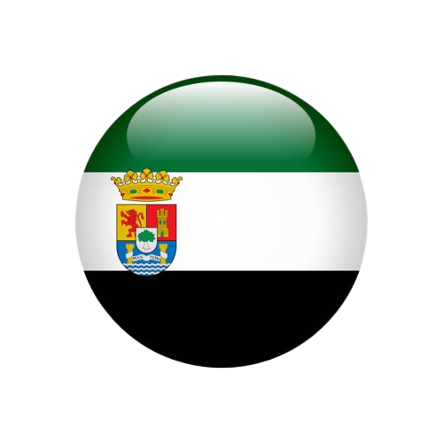
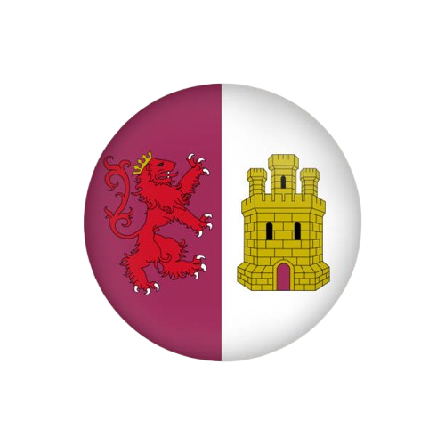

Datos Estadísticos
| Comunidad Autónoma | Extremadura |  |
| Provincia | Cáceres |  |
| Coordenadas | 39° 49′ 03″ N, 6° 19′ 45″ O |
|
| Superficie | 152,91 km² | |
| Población | 564 habitantes (INE 2024) |
|
| Densidad de Población | 3,69 hab/km² |
|
| Gentilicio | Casitos / Casitas |
|
| Código Postal | 10592 |
|
| Límites | Mirabel (NE), Cañaveral (NO y O), Hinojal, Talaván y Monroy (S), Serradilla (E) |
Más Información: